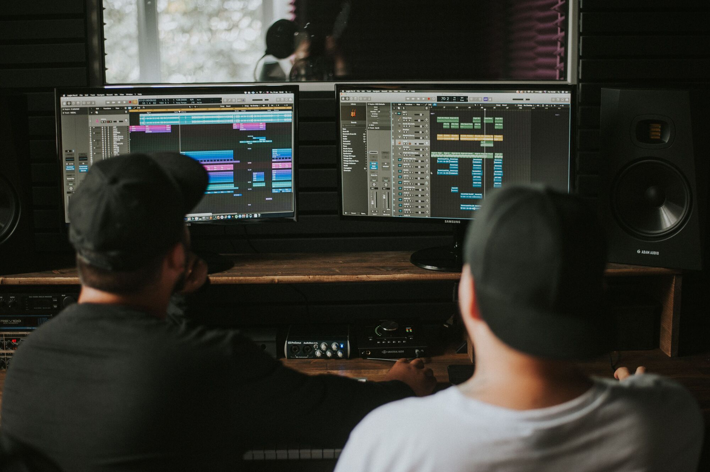
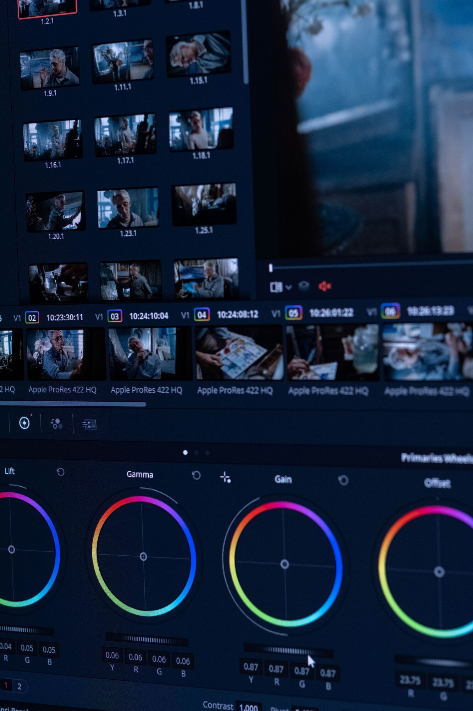
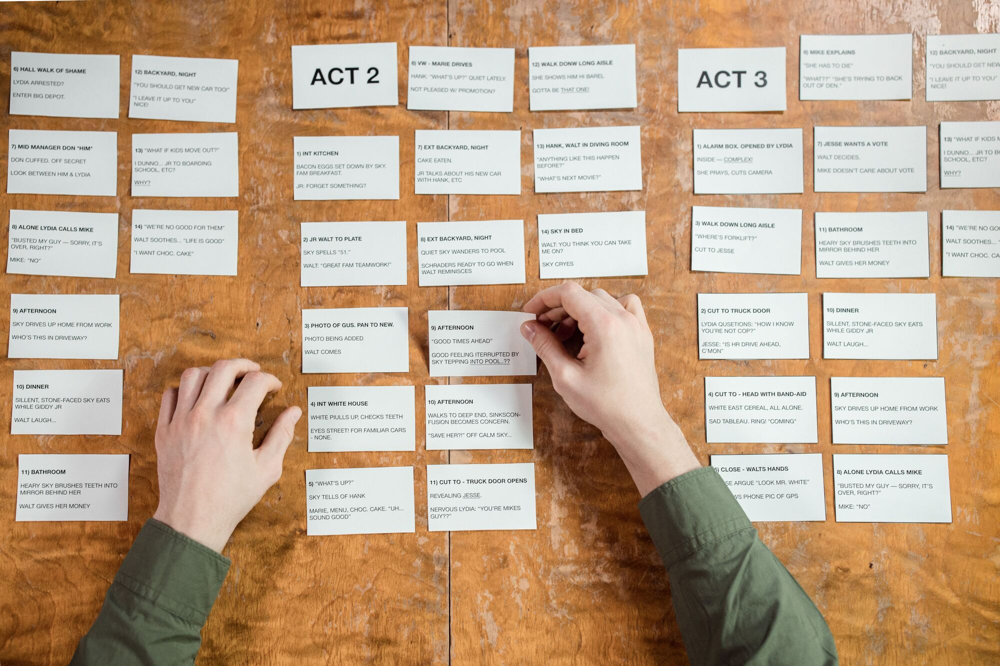
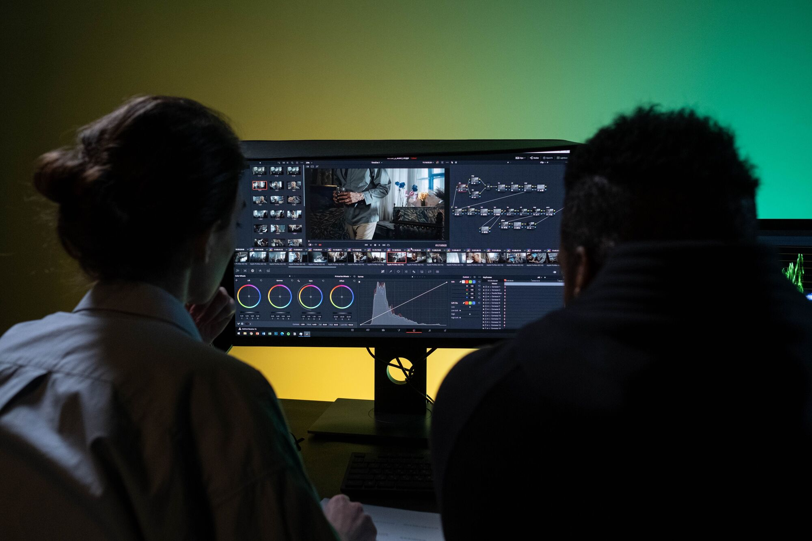

The burden of the infinite project,
lifted.
The endless folders, the lost takes, the missing metadata — managed, mapped, and silently understood. MAIE absorbs the heavy lifting, so you can get back to why you fell in love with the craft in the first place.
Built to Be Trusted
Nothing gets lost in the shuffle. MAIE quietly recognizes every file you bring in, keeps track of every edit, and never lets a duplicate slip through.
Every project lives in its own private space. Nothing is shared unless you choose to share it.
Your past work is always there, exactly as you left it — even as MAIE keeps growing and improving.
Before anything shipped, the system was put through its own audit — real attempts to access what shouldn't be reachable, tracked down and closed one by one.
Media, connected. Intelligence, shared. Creation, amplified.
Choose where your story goes next.
MAIE is in active development.